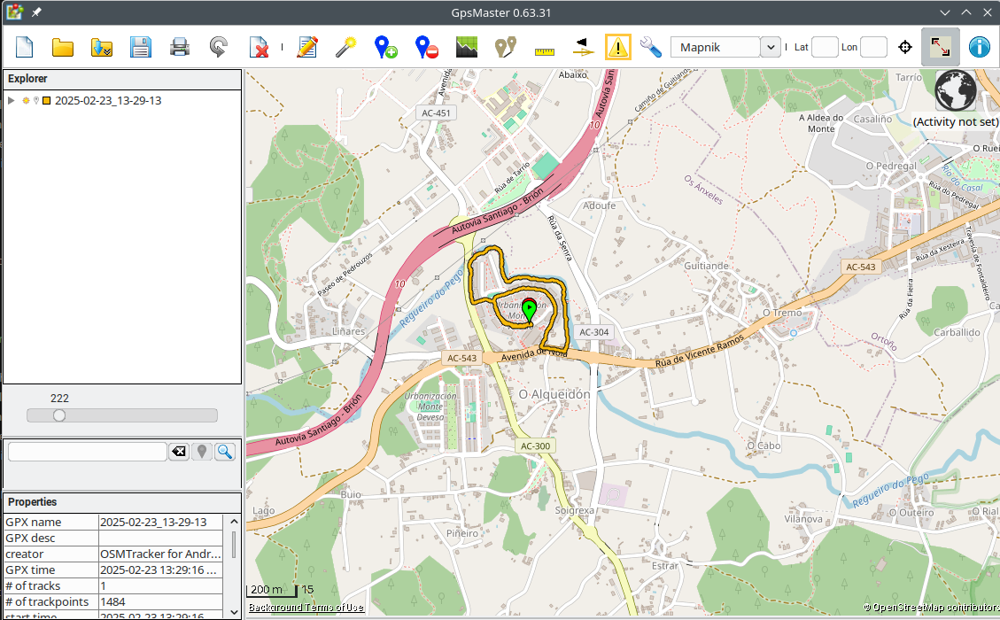
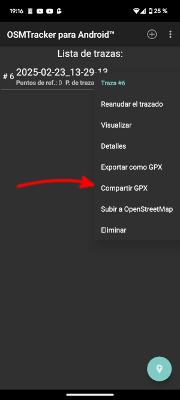

Jugar a descubrir el mundo.
Usaremos OSMTracker para registrar las rutas y despues exportaremos el archivo .gpx y podremos visualizar todas las rutas usando GpsMaster para poder ver todos los sitios por donde hemos ido.
El GpsMaster tiene que ser ejecutado usando java 1.8
Para visualizar las rutas podemos abrir todos los archivos .gpx que tengamos o tambien podemos editar un único archivo e ir incluyendo todos los tracks (las etiquetas <trk>) en un único archivo (aunque puede ser algo lioso)
Para exportar en el OSMTracker es mejor usar la opción de compartir y despues usar el navegador de archivos o el kdeConnect para obtener el archivo .gpx:
WorldDiscover